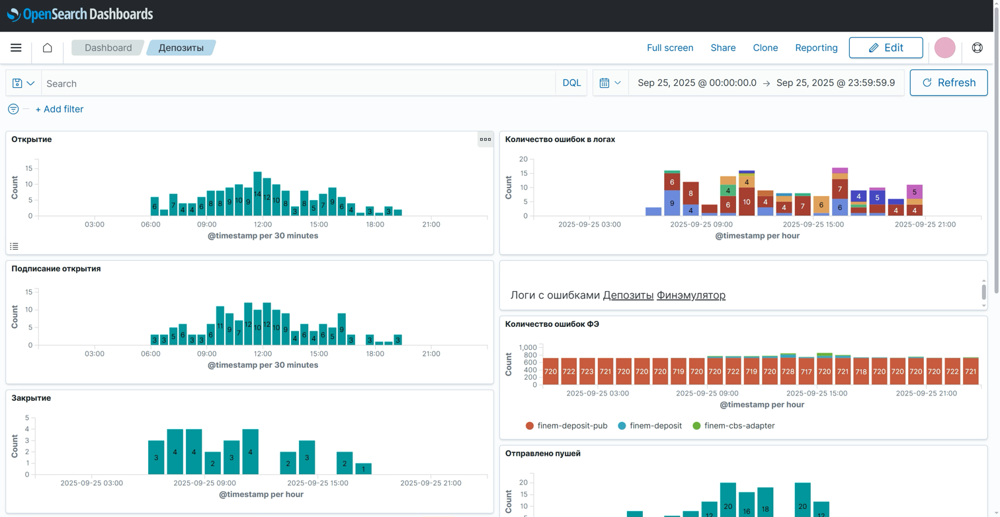
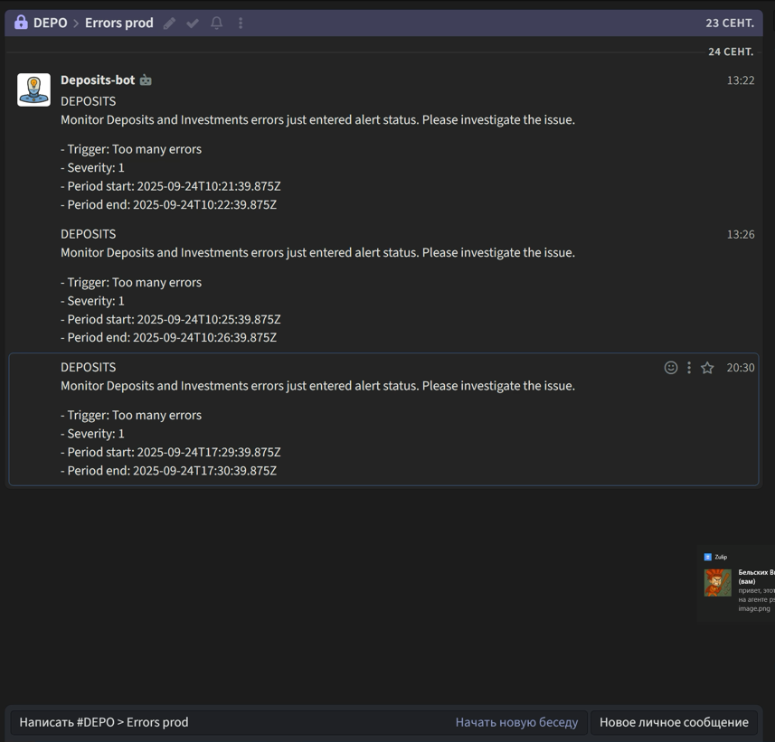

Алертинг в Zulip из Opensearch
- Без алертинга мониторинг бесполезен при сбое
Данные есть, но реакции нет
- Opensearch —проактивный поиск аномалий
Анализ логов и метрик до того, как станет плохо
- Zulip — командный хаб для быстрого решения
- Цель — предупредить об инциденте, а не констатировать его
Ловим "запах гари", а не тушим "пожар"
- Главный риск — "шум" и ложные срабатывания
Alert fatigue убьет любую, даже самую лучшую систему
Мониторинг

Алертинг
